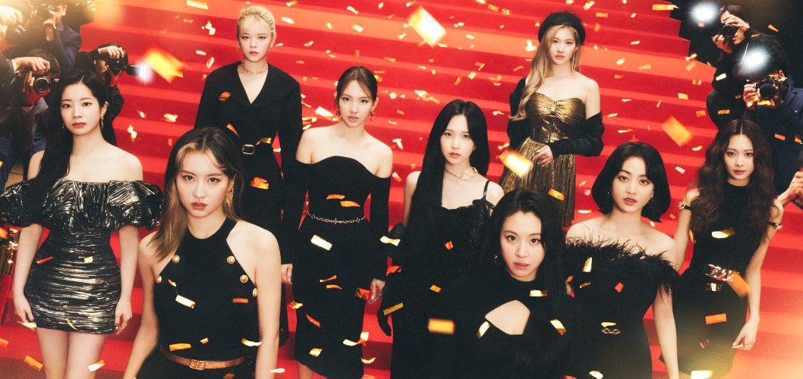
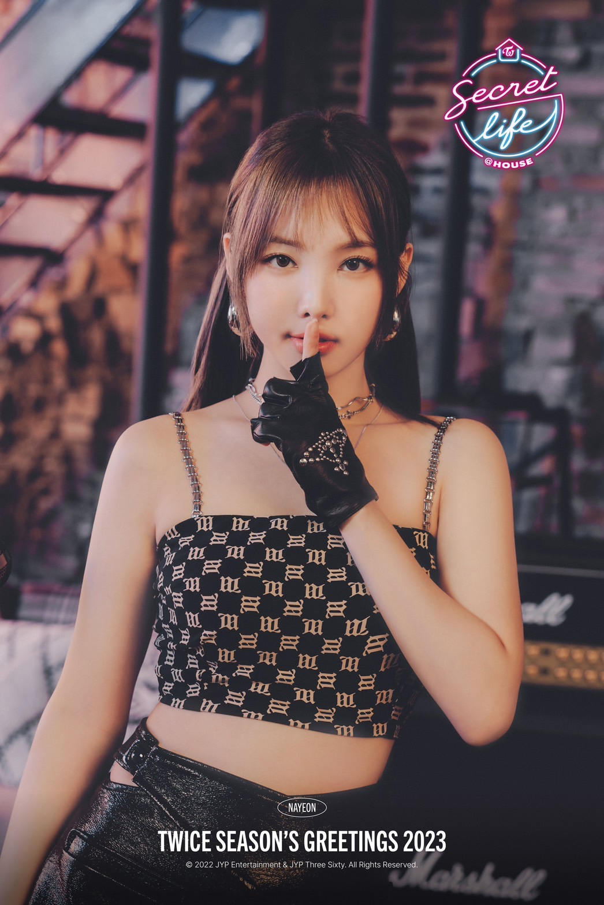
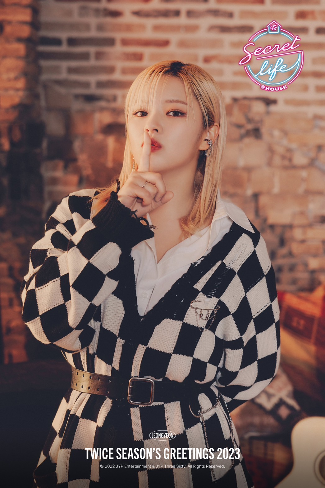
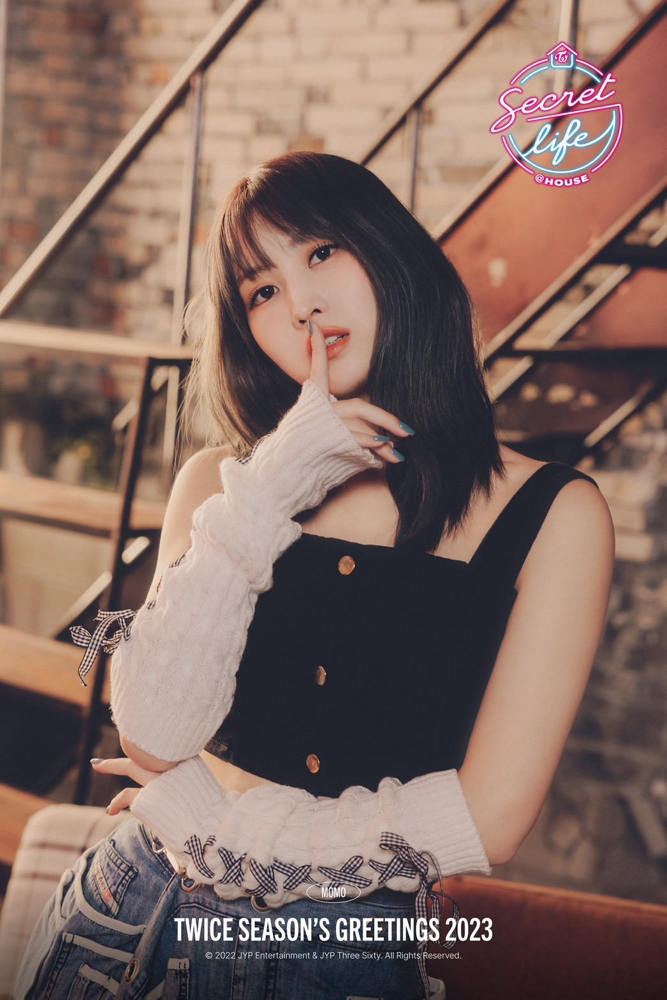
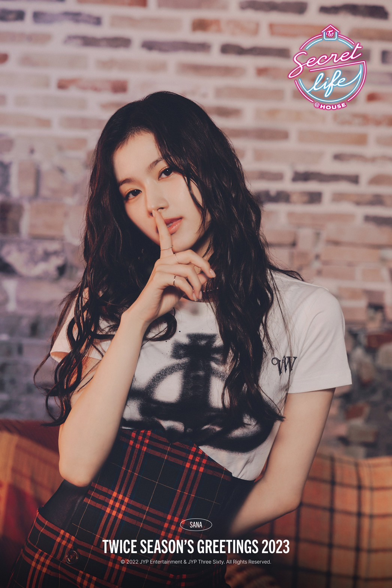
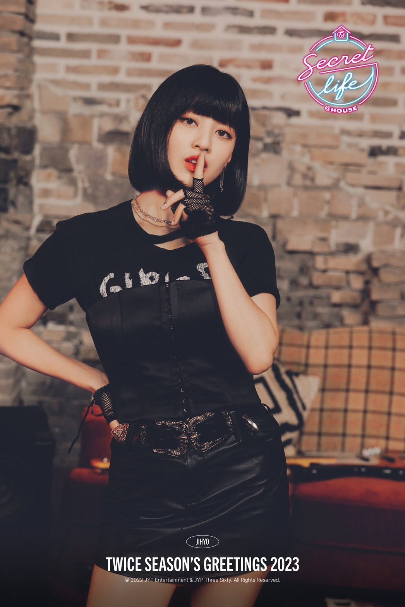
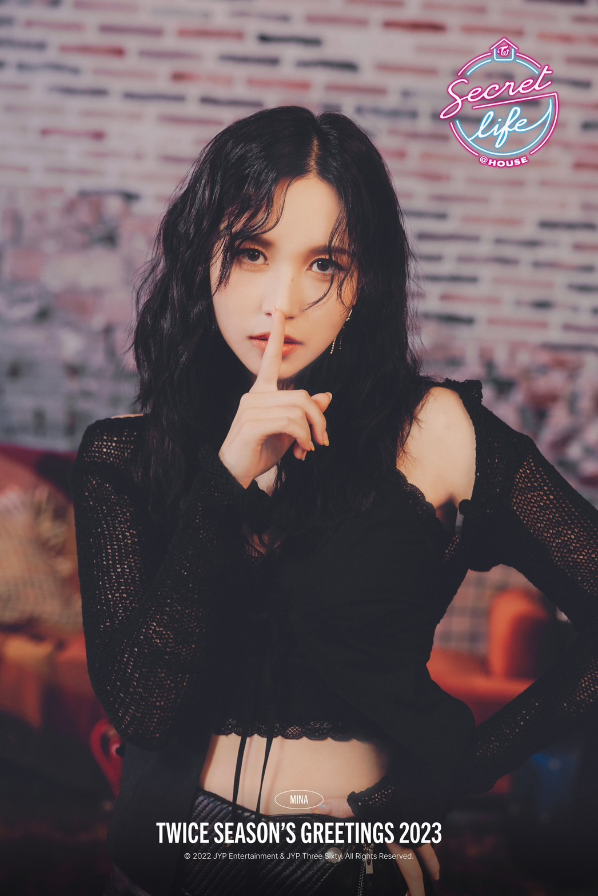
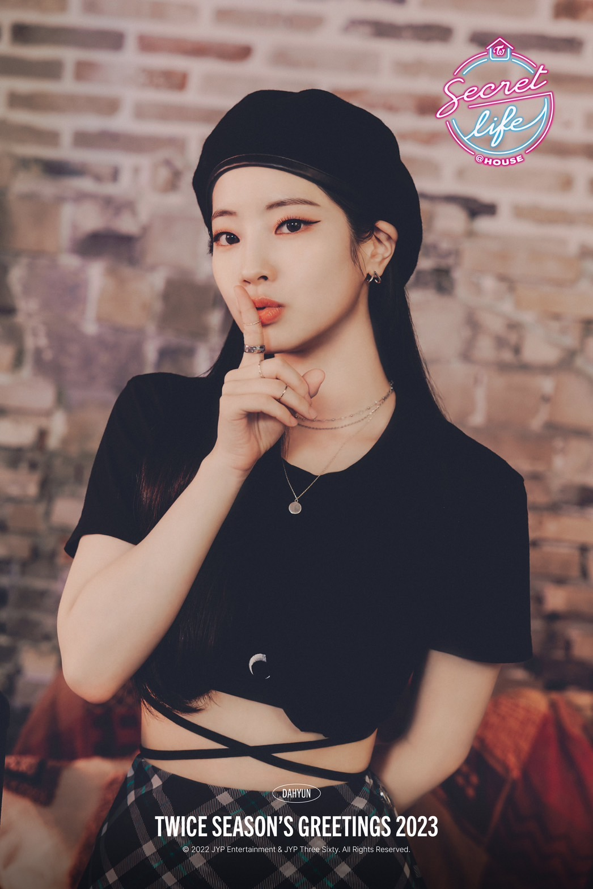
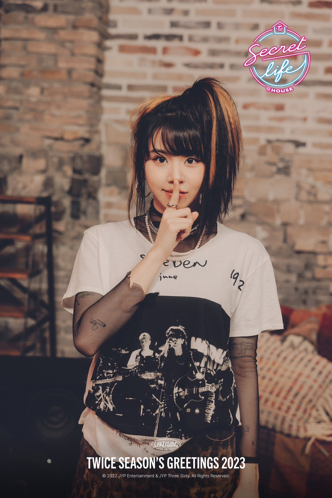
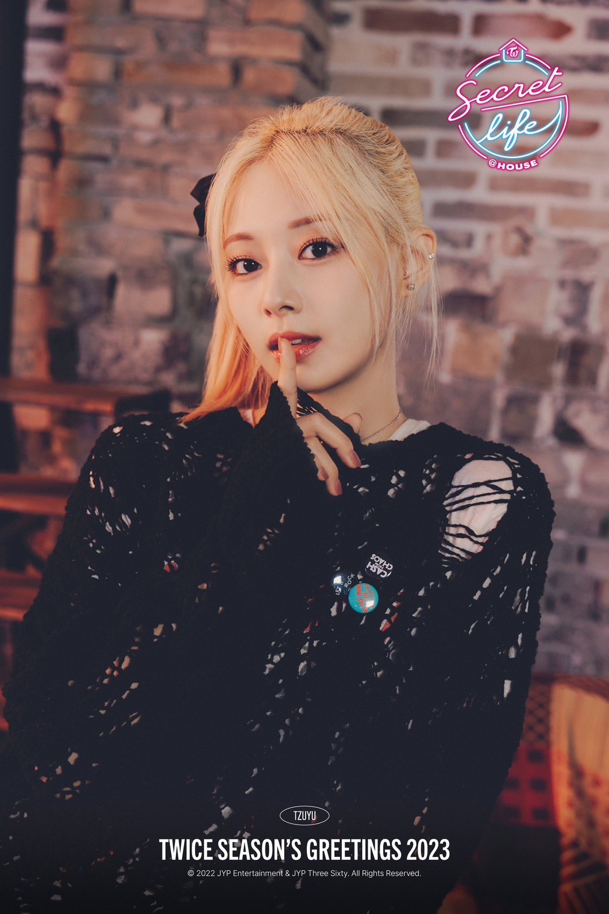

TWICE

TWICE(トゥワイス)
TWICEは韓国の9人組アイドルグループである。
韓国人5人、日本人3人、台湾人1人で活動している。
2015年10月20日にサバイバルオーディション「SIXTEEN」を経てデビュー。
2022年7月12日に"魔の7年目""7年目のジンクス"を乗り越え、メンバー全員が再契約と発表された!!
TWICEのファンのことをONCE(ワンス)という。
メンバー紹介
ナヨン

イム・ナヨン:임나연(林娜璉)
- 韓国人メンバー
- 1995年9月22日(現在27歳)
- TWICEの最年長
- リードボーカル・リードダンサー
- 2022年6月24日にはソロデビュー!!
ジョンヨン

ユ・ジョンヨン:유정연(兪定延)
- 韓国人メンバー
- 1996年11月1日(現在26歳)
- ガールクラッシュ
- リードボーカル
- 休養期間を終え、活動復帰!!
モモ

平井もも:모모
- 日本人メンバー
- 1996年11月9日(現在26歳)
- モモ×ダンシングマシーン＝ダンシングモシーン
- メインダンサー
- キレキレのダンスと普段のギャップがすごい!!
サナ

湊崎紗夏:사나
- 日本人メンバー
- 1996年12月29日(現在26歳)
- shy,shy,shy、Google検索のCM
- サブボーカル
- キュートな愛嬌と高い鼻に注目!!
ジヒョ

パク・ジヒョ:박지효(朴志效)
- 韓国人メンバー
- 1997年2月1日(現在25歳)
- リーダー
- メインボーカル
- 圧倒的な歌唱力!!
ミナ

名井南:미나
- 日本人メンバー
- 1997年3月24日(現在25歳)
- ブラックスワン
- メインダンサー・サブボーカル
- バレエを習っていた影響でしなやかなダンスが魅力的!!
ダヒョン

キム・ダヒョン:김다현(金多賢)
- 韓国人メンバー
- 1998年5月28日(現在24歳)
- トゥブ(お豆腐)
- リードラッパー・サブボーカル
- 真っ白な美肌と一重がキュート!!
チェヨン

ソン・チェヨン:손채영(孫彩瑛)
- 韓国人メンバー
- 1999年4月23日(現在23歳)
- 赤ちゃん怪獣!？個性的なタトゥー
- メインラッパー・サブボーカル
- 可愛いかっこいいの差が激しい!! 推し❢❢
ツウィ

チョウ・ツウィ:쯔위(周子瑜)
- 台湾人メンバー
- 1999年6月14日(現在23歳)
- TWICEの最年少・末っ子
- リードダンサー・サブボーカル
- 世界で最も美しい顔で一位!!
今まで様々な魅力と感動をくれた"TWICE"
これからも応援し続けたいですネ💖
TWICE